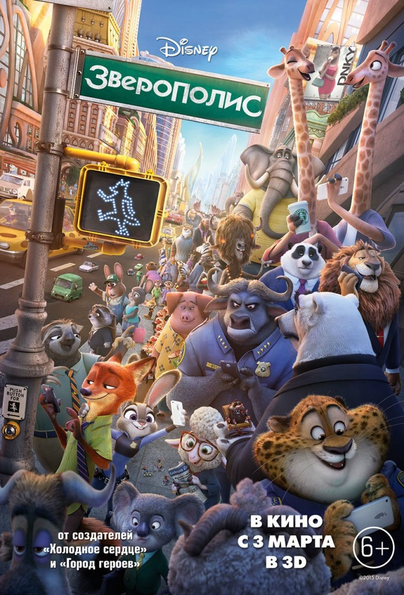
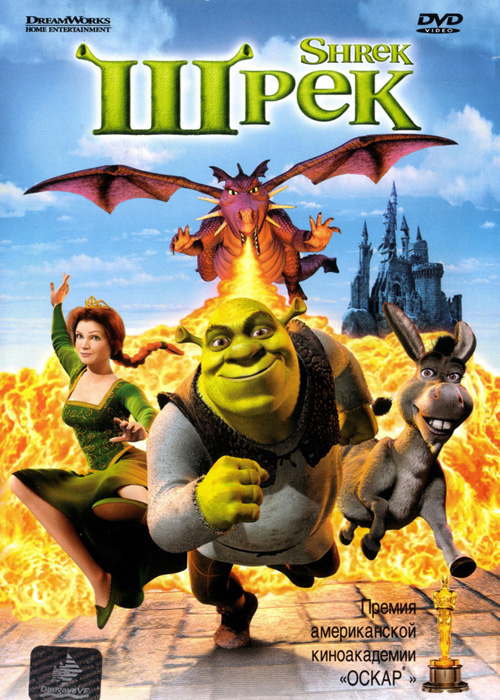
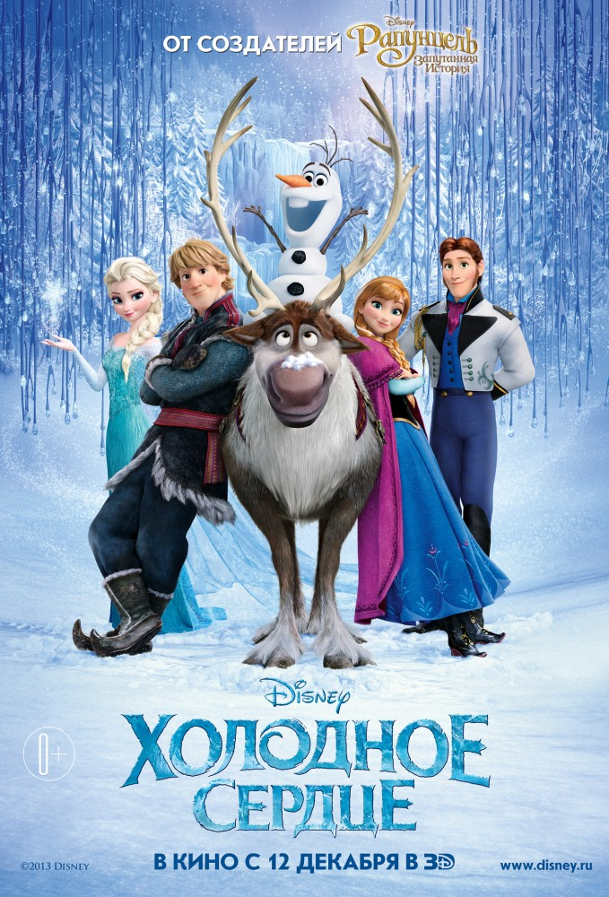
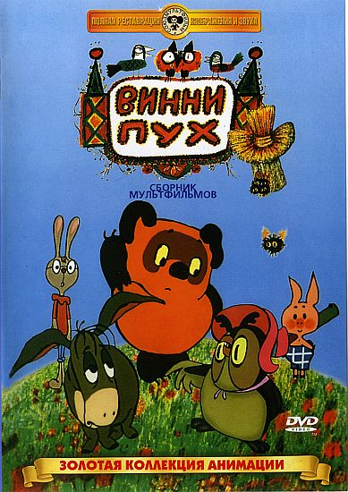

Зверополис
Добро пожаловать в Зверополис — современный город, населенный самыми разными животными, от огромных слонов до крошечных мышек. Зверополис разделен на районы, полностью повторяющие естественную среду обитания разных жителей — здесь есть и элитный район Площадь Сахары и неприветливый Тундратаун. В этом городе появляется новый офицер полиции, жизнерадостная зайчиха Джуди Хоппс, которая с первых дней работы понимает, как сложно быть маленькой и пушистой среди больших и сильных полицейских. Джуди хватается за первую же возможность проявить себя, несмотря на то, что ее партнером будет болтливый хитрый лис Ник Уайлд. Вдвоем им предстоит раскрыть сложное дело, от которого будет зависеть судьба всех обитателей Зверополиса.

Шрек
Жил да был в сказочном государстве большой зеленый великан по имени Шрек. Жил он в гордом одиночестве в лесу, на болоте, которое считал своим. Но однажды злобный коротышка — лорд Фаркуад, правитель волшебного королевства, безжалостно согнал на Шреково болото всех сказочных обитателей.
И беспечной жизни зеленого великана пришел конец. Но лорд Фаркуад пообещал вернуть Шреку болото, если великан добудет ему прекрасную принцессу Фиону, которая томится в неприступной башне, охраняемой огнедышащим драконом…

Головоломка
Райли — обычная 11-летняя школьница, и, как у каждого из нас, ее поведение определяют пять базовых эмоций: Радость, Печаль, Страх, Гнев и Брезгливость. Эмоции живут в сознании девочки и каждый день помогают ей справляться с проблемами, руководя всеми ее поступками. До поры до времени эмоции живут дружно, но вдруг оказывается, что Райли и ее родителям предстоит переезд из небольшого уютного городка в шумный и людный мегаполис. Каждая из эмоций считает, что именно она лучше прочих знает, что нужно делать в этой непростой ситуации, и в голове у девочки наступает полная неразбериха. Чтобы наладить жизнь в большом городе, освоиться в новой школе и подружиться с одноклассниками, эмоциям Райли предстоит снова научиться работать сообща.

Холодное сердце
Когда древнее предсказание сбывается и королевство погружается в объятия вечной зимы, трое бесстрашных героев — принцесса Анна, отважный Кристофф и его верный олень Свен — отправляются в горы, чтобы найти сестру Анны, Эльзу, которая может снять со страны леденящее заклятие. По пути их ждет множество увлекательных сюрпризов и захватывающих приключений: встреча с мистическими троллями, знакомство с очаровательным снеговиком по имени Олаф, горные вершины покруче Эвереста и магия в каждой снежинке. Анне и Кристоффу предстоит сплотиться и противостоять могучей стихии, чтобы спасти королевство и тех, кто им дорог…

Винни Пух
Первый фильм из серии о забавном медвежонке и его друзьях. Фильм снят по сказке Алана Милна. Глава, в которой происходит знакомство с Винни-Пухом и подозрительными пчелами.